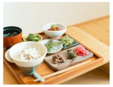
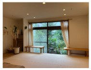
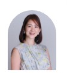
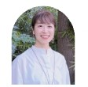

ストレスのない美しい状態から生きる自分に変わることで、こんな毎日を手に入れませんか？
６つの身体（コーシャ）の
ストレスがデトックスされます
古代からの教えによれば、私たちはひとつの身体ではなく、６つの身体を持っています。
ストレスは、この６つの身体に蓄積します。
この講座では、６つの技法を通じて、それぞれをデトックスしていきます。
６つの身体（コーシャ）とストレス
アンナマヤコーシャ
身体の不調、病気、早すぎる老化
無気力、注意力の欠如
安らぎ、健康、活力、
細胞レベルでの若返り
プラーナマヤコーシャ
詰まったエネルギー、創造的表現の
喪失、先の見えない停滞感
ブレイクスルーと
新たな扉が人生に現れる
マノーマヤコーシャ
未解決の感情、過去の傷に
囚われる、トラウマや恐れ
両親との関係性が癒される、
人生が開かれていく
カルママヤコーシャ
ネガティブなカルマの蓄積
人生が重く感じる
ネガティブなカルマからの解放、
新たな機会を引き寄せる
ヴィグニャーナマヤコーシャ
無知、無意識の行動。
人生に制限を感じる
シンクロニシティや奇跡が
流れてくる
アーナンダマヤコーシャ
人生が無味乾燥、
喜びがすぐに薄れてしまう
あらゆる体験、人生が喜び
に満ちたものになる
この講座の４つの特徴

1．ランチ付き
地元で採れた食材やこだわりの調味料を使い、地球と人にやさしい食事を提供するシェフが、本講座専用の特別メニューでランチをご用意。2日間のストレスデトックスを促進します。

2．癒やされる空間
会場は都内でありながら、静かな一軒家。人生のかけがえのない時間をゆっくり振り返る、大切な人たちと穏やかに過ごすためにリフォームされた空間。ここにいるだけで癒されます。
3．異色のコーリード
講座を進行するのは、看護師と現役部長という異色の2人。百戦錬磨の現場経験が共通点。さまざまな状況、お悩み・ストレスに寄り添い、サポートします。
4．フォローアップ
講座を終え、日常に戻ってからがあなたの人生を変えていく本番です！３ヶ月間のフォローアップをオンラインで行います。美しい状態を習慣にしていきましょう。
講座リーダー

使命：人生の最期に、一番素晴らしい時間を提供する／最期に続くまでの日常を、軽やかに・豊かに生き切るためのサポートをする
・中学３年生で祖母を肝臓がんで亡くしたことを機に看護師を志す。当時は本人にがんを告知しない時代で、「祖母は本当は何を望んでいたのだろう」という問いが、私の看護の原点となっている。
・慶義塾大学病院で25年間勤務し、がん専門相談員として延べ1万人以上の人生最終期の意思決定を支援。その後は、ホスピス・訪問看護も経験。
・40歳で更年期症状により1か月間寝込み、予防医療や食事、腸活と出会う。毎日の食事や在り方、予防行動の大切さを実感。
・2025年、ワンネスムーブメントと出会い、人生の目的が明確になる。現在はホスピス「天国につながるホームそら」の運営に伝わりながら、終末期看護師の育成、医療予防の普及と「人生の最期を一番素晴らしい時間にできる文化を日本から世界へ広げる」ことを使命として活動している。

使命：抜苦与楽／人それぞれの魅力や使命の発見と発揮のお手伝い
大学卒業後、金融会社に就職、現役管理職を務めつつ、副業で魅力才能開花コーチ、宿命アドバイザー、アニマルコミュニケーター、ひふみ波動セラピスト、ワンネストレーナーとして活動。
・幼少期から人の顔色を伺い自己主張できない性格。運動音痴やいじめで劣等感を抱く。就活も苦戦し、補欠入社で自信喪失。
・2005年コーチングに出会い、自分の価値観に気づいて意識が変化。2007年コーアクティブリーダーシッププログラムで自分の限界を超える体験から人生が変化していく。2013年より算命学、帝王学を学び、物事の本質や生き方・あり方を探求、宿命鑑定を開始。
・人の魅力が開花していくプロセスに立ち会うことが歓びであり、2022年より生き方・あり方をテーマに玄木塾を主宰。2025年からワンネスムーブメントに参加、出雲大社で素戔嗚尊とつながり、波動セラピーとのご縁によりエネルギーワークを開始。
講座受講者の体験談
親に対する怒りと諦めの感情があることに、はじめて気がつきました。ずっとしまっていた気持ちを穏やかに観察ができ、涙が止まりませんでした。
この講座を受けてから、ストレスは感じますが、溜まりにくくなりました！人の目が気にならなくなり、職場で苦手だった上司とも関係が改善しました。
家族が病気になり、医療費も高額で心が落ち着かない毎日でしたが呼吸法を続けました。すると焦りが消え、医療費と同額の臨時収入が入ってきました。
講座概要
（ストレスデトックス）
両日とも10：00〜18：30
（東久留米市内）
⇒早割 55,000円（8月31日まで）
動きやすい服装でお越しください